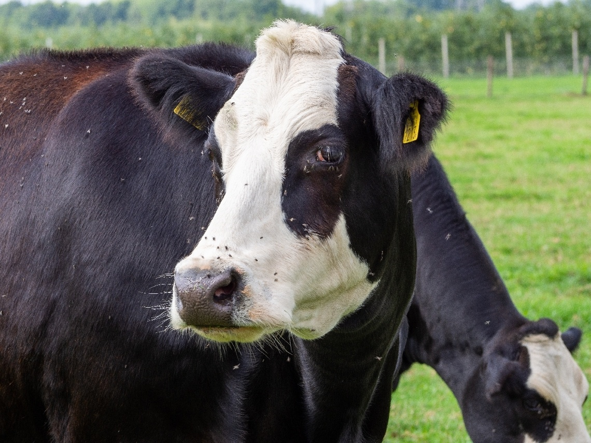
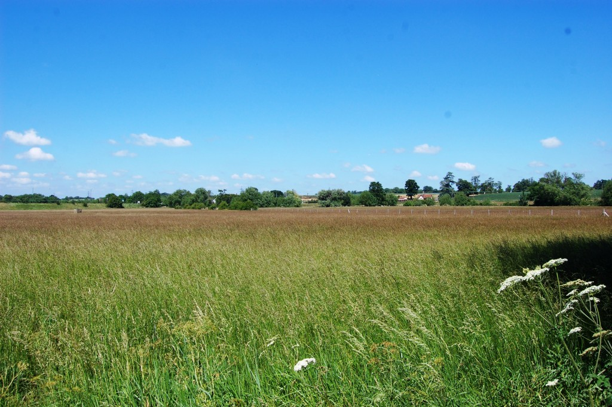

Tis weer lente
Gepubliceert op 18 Januari door Malina
Lars rydder ut av oppvaskmaskinen Lars er heldig, han har en oppvaskmaskin. Oppvaskmaskinen vasker opp skitne tallerkener, kassaroller, glass og bestikk. Lars bestemmer seg for å rydde ut bestikk først. Han åpner opp skuffen for bestikk. Først legger han oppi kniver, deretter gafler og skjeer. I skuffen var det helt tomt for gafler, så det var godt Lars ryddet ut av oppvaskmaskinen. Videre tar Lars ut tallerkenene og glassene og putter dem på plass i skapet.
Kijk niet zo moeilijk joh
Fredrik pusser tenner Fredrik har akkurat spist frokost. Han går inn til badet for å pusse tenner. Fredrik tar fram tannbørsten og tannkrem. Han tar tannkrem på tannbørsten. Deretter tar Fredrik og skrur på vannet i vasken. Han skyller tannbørsten med tannkrem i vannet. Fredrik putter tannbørsten i munn og pusser tennene. Han pusser først jekslene bakerst i munnen både oppe og nede, til høyre og venstre. Deretter pusser Fredrik fortennene. Fredrik spytter ut tannkremen og skyller tannbørsten. Fredrik skyller munnen med vann og han er klar for dagens utfordringer.
Lekker weertje en een lekker weitje
Marthe bader i Hvervenbukta Det er en varm sommer dag og Marthe har sommerferie. Det er fint vær og Marthe har lyst til å bade. Hun pakker håndkle, badetøy, solkrem, matpakke og noe å drikke. Marthe gleder seg til å bade. Marthe tar buss nummer 76 til Hvervenbukta. Det er mange mennesker der. Hun legger håndkleet sitt på gresset og går ned til stranda. Marthe kaster seg ut i vannet. Nå bader Marthe, og hun er veldig fornøyd med temperaturen på vannet.
lenteberichten
← Vorig bericht
Verder kijkenLaatste berichten
Dieren in het nieuws